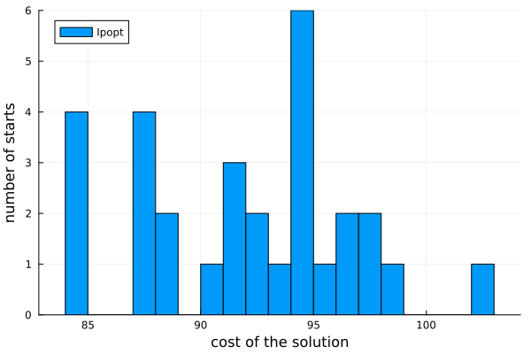
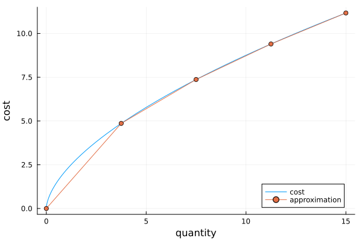
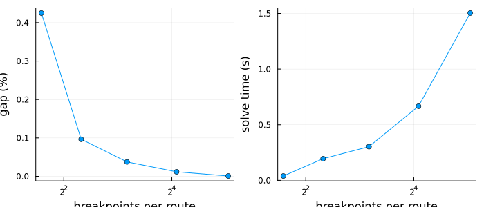
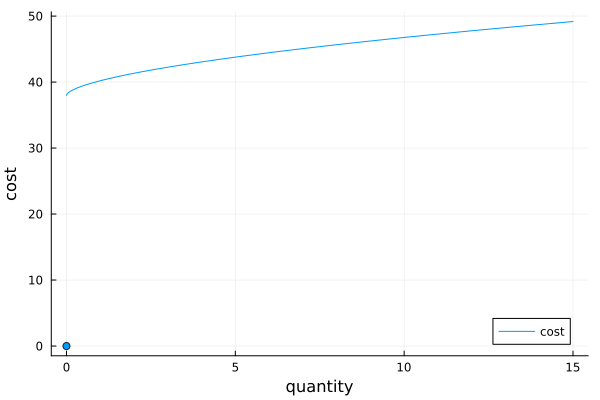

Transportation with economies of scale
This tutorial solves a transportation problem whose shipping costs are nonlinear in the quantity shipped, first as a nonlinear program with Ipopt, and then with piecewise linear approximations of the costs and the mixed-integer solver HiGHS. It shows
- why a local nonlinear solver is not enough for this kind of problem,
- how a piecewise linear approximation gives a global optimum together with a bound on the error of the approximation,
- how the error shrinks when the approximation is refined, and
- how a discontinuous cost, a fixed charge for using a route, fits in the same framework.
The problem
Three suppliers ship a product to four customers. Shipping x units along a route costs a * x^0.6, so the cost per unit falls as the quantity grows: there are economies of scale. Minimizing such a concave cost over the transportation polytope is a nonconvex problem, whose optimal solutions use few routes with large quantities.
using JuMPusing HiGHSusing Ipoptusing PiecewiseLinearOptusing Plotsusing Randomsupply = [20.0, 30.0, 25.0]demand = [15.0, 20.0, 18.0, 22.0]I, J = length(supply), length(demand)Random.seed!(1)a = round.(2 .+ 4 .* rand(I, J); digits = 1)3×4 Matrix{Float64}:
2.2 2.1 2.3 4.6
2.5 4.8 5.4 3.4
3.6 5.1 5.2 5.1The quantity on a route can never exceed the smaller of the supply and the demand it connects, which bounds the domain of each cost function:
capacity(i, j) = min(supply[i], demand[j])cost(i, j, x) = a[i, j] * max(x, 0.0)^0.6cost (generic function with 1 method)The constraints are the same in every model below, so we write a function that builds them:
function transportation_model(optimizer) model = Model(optimizer) set_silent(model) @variable(model, 0 <= x[i in 1:I, j in 1:J] <= capacity(i, j)) @constraint(model, [i in 1:I], sum(x[i, :]) <= supply[i]) @constraint(model, [j in 1:J], sum(x[:, j]) == demand[j]) return model, xendtransportation_model (generic function with 1 method)and a function that evaluates the true cost of a shipping plan:
true_cost(x) = sum(cost(i, j, x[i, j]) for i in 1:I, j in 1:J)true_cost (generic function with 1 method)A nonlinear solver finds local optima
Ipopt is a local solver: it finds a point where no small change improves the objective, which for a nonconvex problem need not be the best point overall. The cost x^0.6 also has an infinite slope at x = 0, where the optimal solutions lie, and Ipopt fails with numerical errors on the function as it stands. The usual remedy is to shift the argument by a small amount, here 1e-6. We solve the shifted problem from 30 random starting points and collect the true costs of the solutions:
function solve_nlp(start) model, x = transportation_model(Ipopt.Optimizer) @objective( model, Min, sum(a[i, j] * (x[i, j] + 1e-6)^0.6 for i in 1:I, j in 1:J) ) set_start_value.(x, start) optimize!(model) @assert termination_status(model) == LOCALLY_SOLVED return true_cost(value.(x))endrng = MersenneTwister(2)nlp_costs = map(1:30) do _ start = [rand(rng) * capacity(i, j) for i in 1:I, j in 1:J] return solve_nlp(start)endsort(unique(round.(nlp_costs; digits = 2)))18-element Vector{Float64}:
84.13
87.02
87.1
88.48
90.7
91.45
92.65
93.13
94.05
94.13
94.23
94.75
95.72
96.63
96.9
97.08
98.21
102.53Every run ends in a local optimum, and which one depends on the starting point. The costs of the solutions spread over a wide range:
histogram( nlp_costs; bins = 20, xlabel = "cost of the solution", ylabel = "number of starts", label = "Ipopt", legend = :topleft,)
Repeating the solve from many starts improves the odds of finding the global optimum, but gives no guarantee and no way of telling whether the best solution found is the global optimum. The number of local optima also grows quickly with the size of the problem.
A piecewise linear approximation gives a global optimum
The alternative is to replace each cost function by a piecewise linear approximation and solve the resulting mixed-integer program. With n breakpoints spread evenly over the domain of a route, the approximation interpolates the cost at the breakpoints:
n = 5xs = range(0, capacity(1, 1); length = n)plot( t -> cost(1, 1, t), 0, capacity(1, 1); label = "cost", xlabel = "quantity", ylabel = "cost", legend = :bottomright,)plot!( xs, [cost(1, 1, t) for t in xs]; marker = :circle, label = "approximation",)
piecewiselinear adds the approximation to the model and returns an expression for its value. The cost is minimized, so the output only needs to be bounded from below, which the Epigraph direction expresses and which gives a slightly smaller model:
function solve_pwl(n; method = Logarithmic()) model, x = transportation_model(HiGHS.Optimizer) costs = [ piecewiselinear( model, x[i, j], range(0, capacity(i, j); length = n), t -> cost(i, j, t); method = method, direction = Epigraph(), ) for i in 1:I, j in 1:J ] @objective(model, Min, sum(costs)) optimize!(model) return objective_value(model), true_cost(value.(x)), solve_time(model)endlower, upper, time = solve_pwl(5)(84.04600450799946, 84.1271879129117, 0.18513154983520508)The solver returns the global optimum of the approximated problem. Because the cost functions are concave, the interpolant between two breakpoints lies below the cost, so the optimal value of the approximation is a lower bound on the optimal cost of the original problem. The true cost of the solution is an upper bound. The two together certify how far the solution is from the true optimum, which no number of local solves can do:
(lower = lower, upper = upper, gap = (upper - lower) / upper)(lower = 84.04600450799946, upper = 84.1271879129117, gap = 0.0009650079472082093)The best of the 30 Ipopt runs happens to reach the same cost, but only the bounds tell us that it is the global optimum:
minimum(nlp_costs)84.12718771856673Refining the approximation
The gap between the bounds shrinks as breakpoints are added, while the model grows. The logarithmic formulation keeps the growth slow: a route with d segments needs ceil(log2(d)) binary variables.
ns = [3, 5, 9, 17, 33]results = [solve_pwl(n) for n in ns]gaps = [(u - l) / u for (l, u, _) in results]times = [t for (_, _, t) in results]plot( plot( ns, 100 .* gaps; marker = :circle, xscale = :log2, xlabel = "breakpoints per route", ylabel = "gap (%)", label = "", ), plot( ns, times; marker = :circle, xscale = :log2, xlabel = "breakpoints per route", ylabel = "solve time (s)", label = "", ); layout = (1, 2), size = (700, 300),)
Comparing formulations
The method keyword selects the formulation. All methods give the same optimum, but they differ in size and in solve time. For minimizing concave costs, MultipleChoice is often the fastest with HiGHS despite its larger number of binary variables, and ConvexPieces coincides with it here, as every segment of a concave cost is its own convex piece in the epigraph direction. See Formulation methods for advice on choosing a method.
for method in ( Logarithmic(), ZigZagBinary(), IndependentBranching(), DisaggregatedLogarithmic(), MultipleChoice(), ConvexPieces(), Incremental(),) lb, _, seconds = solve_pwl(17; method = method) println( rpad(method, 34), " lower bound ", round(lb; digits = 3), " time ", round(seconds; digits = 2), " s", )endLogarithmicEmbedding() lower bound 84.117 time 0.66 s
ZigZagBinary() lower bound 84.117 time 1.42 s
IndependentBranching(:biclique) lower bound 84.117 time 0.68 s
DisaggregatedLogarithmic() lower bound 84.117 time 0.71 s
MultipleChoice() lower bound 84.117 time 0.13 s
ConvexPieces(:mc) lower bound 84.117 time 0.06 s
Incremental() lower bound 84.117 time 0.77 sFixed charges
Using a route often has a fixed cost in addition to the quantity-dependent cost. Say the routes with a low unit cost are served by rail, with a high fixed charge, and the others by truck, with a low one. The cost of a route is then zero when nothing is shipped and jumps to the fixed charge for any positive quantity:
F = round.(60 .- 10 .* a)fixed_charge_cost(i, j, x) = x > 0 ? F[i, j] + cost(i, j, x) : 0.0plot( t -> fixed_charge_cost(1, 1, t), 1e-6, capacity(1, 1); label = "cost", xlabel = "quantity", ylabel = "cost", legend = :bottomright,)scatter!([0.0], [0.0]; label = "", color = 1)
A smooth nonlinear solver cannot handle the jump. The usual remedy in nonlinear modeling is a binary variable for each route with big-M constraints, which has to be written by hand and still leaves a nonconvex problem. With this package, the jump is just part of the function: the segments of a PWLFunction need not join up, so the function has a single point at the origin, followed by the segments of the approximation above the fixed charge.
function fixed_charge_pwl(i, j, n) xs = range(0, capacity(i, j); length = n) segments = [SegmentPointRep{1,1}([(0.0,)], [(0.0,)])] for k in 1:(n-1) push!( segments, SegmentPointRep{1,1}( [(xs[k],), (xs[k+1],)], [ (F[i, j] + cost(i, j, xs[k]),), (F[i, j] + cost(i, j, xs[k+1]),), ], ), ) end return PWLFunction(segments, Intervals())endfixed_charge_pwl (generic function with 1 method)Discontinuous functions are supported by IndependentBranching, DisaggregatedLogarithmic and MultipleChoice. The general form of piecewiselinear takes the function and a vector of inputs, and returns the outputs together with the formulation:
function solve_fixed_charge(n) model, x = transportation_model(HiGHS.Optimizer) costs = map(Iterators.product(1:I, 1:J)) do (i, j) y, _ = piecewiselinear( model, [x[i, j]], fixed_charge_pwl(i, j, n); method = IndependentBranching(), direction = Epigraph(), ) return y[1] end @objective(model, Min, sum(costs)) optimize!(model) return objective_value(model), value.(x)endroutes(x) = [(i, j) for i in 1:I, j in 1:J if x[i, j] > 1e-6]lower_fixed, x_fixed = solve_fixed_charge(17)(lower = lower_fixed, routes = routes(x_fixed))(lower = 192.3779218077326, routes = [(2, 1), (1, 2), (2, 3), (3, 3), (3, 4)])The fixed charges move the shipments to other routes than the unit costs alone would choose:
model, x = transportation_model(HiGHS.Optimizer)costs = [ piecewiselinear( model, x[i, j], range(0, capacity(i, j); length = 17), t -> cost(i, j, t); direction = Epigraph(), ) for i in 1:I, j in 1:J]@objective(model, Min, sum(costs))optimize!(model)routes(value.(x))5-element Vector{Tuple{Int64, Int64}}:
(2, 1)
(3, 1)
(1, 2)
(3, 3)
(2, 4)Summary
- A local nonlinear solver finds a local optimum of a nonconvex problem, and which one depends on the starting point.
- A piecewise linear approximation turns the problem into a mixed-integer program whose global optimum a MIP solver finds, and for concave costs the optimal value and the true cost of the solution bound the true optimum.
- Refining the approximation shrinks the gap at a modest cost with the logarithmic formulations.
- Discontinuous costs need no special treatment beyond choosing a method that supports them.